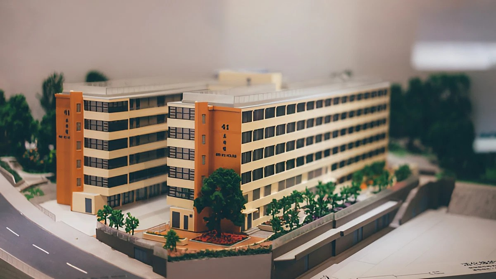
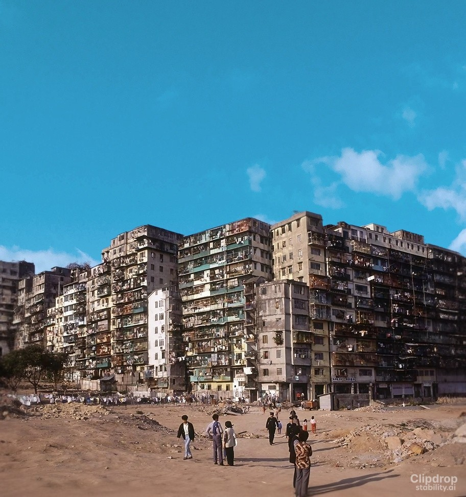

Our showroom features StoryMaps from P4 to P6 students who have been recognized in the Category 1 awards.
This year's theme is "Environmental, Social, and Governance" (ESG), which addresses crucial issues for our city's sustainable future.
Students applied ESG principles to suggest improvements for our city in areas of sustainability, resilience, and diversity. The ESG themes touch upon environmental care, social inclusivity, and resource access, demonstrating the potential of spatial data in problem-solving.
Meow in Every Coordinate
More Info
Tai Po Old Market Public School (Plover Cove)
Ever strolled by your school and bumped into a charming feline? Each has its own tale to purr. Dive in to uncover the stories of the kitties in the Tai Po community! 🐱
Ripples of ESG: Discover Shing Mun River
More Info
Leung Kui Kau Lutheran Primary School
Hong Kong is my home, and Sha Tin is where we grew up. Embracing Hong Kong begins with cherishing our own homes. Every spot by the Shing Mun River has witnessed our growth - the river is our companion.
Hong Kong's Renewal Projects

More Info
Tsung Tsin Primary School and Kindergarten
Hong Kong boasts profound cultural treasures that deserve to be cherished. Through our revitalization efforts, we're dedicated to preserving and passing on this legacy. Dive in to learn more!
Kowloon City Then and Now

More Info
Munsang College Primary School
Step into Kowloon City: Where flavors meet history and cultures intertwine. Read more to discover a Hong Kong gem dating back to the Southern Song Dynasty.